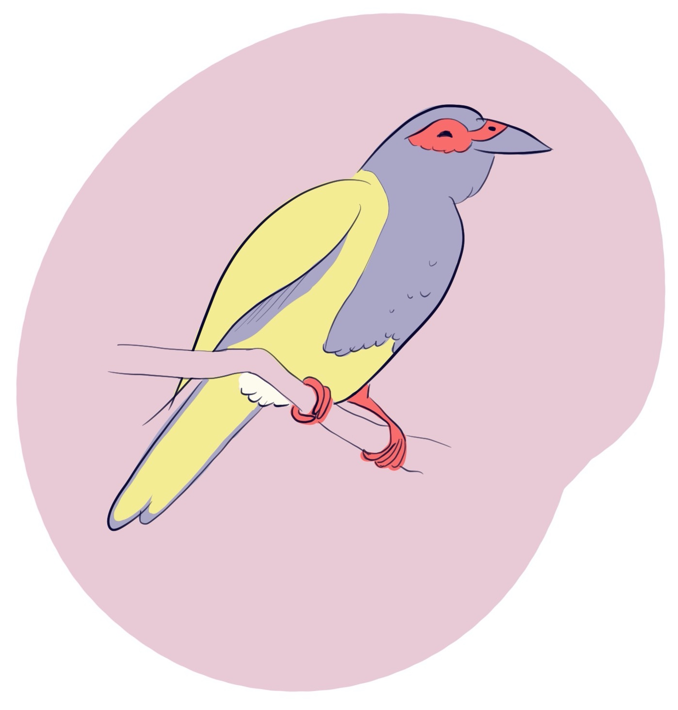

Figbird
Effortless realtime data management for React + Feathers applications. A library used in and extracted from Humaans.
Idiomatic React Hooks
Fetch some data with const { data } = useFind('notes') and your components will rerender in realtime as the data changes upstream. Modify the data using the const { patch } = useMutation('notes') and the updates will be instantly propagated to all components referencing the same objects.
useGetuseFinduseMutation
Live Queries
Works with Feathers realtime events and with local data mutations. Once a record is created/modified/removed all queries referencing this record get updated. For example, if your data is fetched using useFind('notes', { query: { tag: 'ideas' } }) and you then patch some note with patch({ tag: 'ideas' }) - the query will update immediately and rerender all components referencing that query. Adjust behaviour per query:
merge- merge realtime events into cached queries as they come (default)refetch- refetch data for this query from the server when a realtime event is receiveddisabled- ignore realtime events for this query
Fetch policies
Fetch policies allow you to fine tune Figbird to your requirements. With the default swr (stale-while-revalidate) Figbird uses cached data when possible for maximum responsiveness, but refetches in the background on mount to make sure data is up to date. The other policies include cache-first which will use cache and not refresh from the server (compatible with realtime).
swr- show cached data if possible and refetch in the background (default)cache-first- show cached data if possible and avoid fetching if data is therenetwork-only- always refetch data on mount
Cache eviction
The usage of useGet and useFind hooks gets reference counted so that Figbird knows exactly if any of the queries are still being referenced by the UI. By default, Figbird will keep all the data and cache without ever evicting, but if your application demands it, you can strategically implement cache eviction hooks (e.g. on page navigation) to clear out all unused cache items or specific items based on service name or data attributes. (Note: yet to be implemented.)
manual- cache all queries in memory forever, evict manually (default)unmount- remove cached query data on unmount (if no component is referencing that particular cached data anymore)delayed- remove unused cached data after some time
Install
$ npm install figbird
Example
import React from 'react'
import io from 'socket.io-client'
import feathers from '@feathersjs/client'
import {
FigbirdProvider,
Figbird,
FeathersAdapter,
createSchema,
service,
createHooks,
} from 'figbird'
// Define your domain types and services for type inference
interface Note { id: string; content: string; tag?: string }
interface NoteService { item: Note }
const schema = createSchema({
services: {
notes: service<NoteService>(),
},
})
const socket = io('http://localhost:3030')
const client = feathers()
client.configure(feathers.socketio(socket))
client.configure(feathers.authentication({ storage: window.localStorage }))
const adapter = new FeathersAdapter(client)
const figbird = new Figbird({ adapter, schema })
const { useFind, useGet, useMutation, useFeathers } = createHooks(figbird)
function App() {
return (
<FigbirdProvider figbird={figbird}>
<Notes />
</FigbirdProvider>
)
}
function Notes() {
// useFind returns meta (FindMeta) with FeathersAdapter
const { status, data, meta, error } = useFind('notes', { query: { tag: 'ideas' } })
if (status === 'loading') return <>Loading...</>
if (status === 'error') return <>{error!.message}</>
return (
<div>
Showing {data!.length} notes of {meta.total}
</div>
)
}
function SingleNote() {
// useGet does NOT expose meta by default (returns only the item)
const { data } = useGet('notes', '1')
return <>{data?.content}</>
}
You can also use the untyped hooks directly from figbird (without createHooks), which return generic any data for convenience.
TypeScript Types
Overview
Figbird provides strong TypeScript inference with a simple schema DSL. Define services with their item shape (and optionally query, create, update, patch payloads):
import { createSchema, service } from 'figbird'
interface Task { id: string; title: string; completed: boolean }
interface TaskQuery { completed?: boolean }
interface TaskService {
item: Task
query?: TaskQuery
}
const schema = createSchema({
services: {
tasks: service<TaskService>(),
},
})
Create a Figbird instance and typed hooks:
import { Figbird, FeathersAdapter, createHooks } from 'figbird'
const adapter = new FeathersAdapter(feathers)
const figbird = new Figbird({ adapter, schema })
const { useFind, useGet, useMutation } = createHooks(figbird)
// Fully typed results
const tasks = useFind('tasks') // QueryResult<Task[], FindMeta>
const task = useGet('tasks', '123') // QueryResult<Task>
Params type inference (domain query fields):
// params.query is inferred from the service domain query,
// while Feathers controls like $limit, $sort are preserved
useFind('tasks', { query: { completed: true, $limit: 10 } })
// ^ ^ domain fields ^ Feathers controls
Mutations:
const { create, update, patch, remove } = useMutation('tasks')
// create returns the mutated item (Task)
const newTask = await create({ title: 'Hello', completed: false })
Schemas
Schemas power all TypeScript inference in Figbird. You declare a map of services with their types, and Figbird derives the rest.
- Define a service type with the shape of your items and optional payload/query types:
import { createSchema, service } from 'figbird'
// Domain types
interface Person { id: string; name: string; email: string }
interface Task { id: string; title: string; completed: boolean; priority?: number }
// Optional: Domain-specific query types (clean business filters)
interface PersonQuery { name?: string; email?: string }
interface TaskQuery { completed?: boolean; priority?: number }
// Optional: Custom payload types
interface TaskCreate { title: string; completed?: boolean }
interface TaskPatch { title?: string; completed?: boolean; priority?: number }
interface PersonService {
item: Person
query?: PersonQuery
// create/update/patch omitted – see defaults below
}
interface TaskService {
item: Task
query?: TaskQuery
create?: TaskCreate // optional — defaults to Partial<item>
update?: Task // optional — defaults to item (full replacement)
patch?: TaskPatch // optional — defaults to Partial<item>
}
export const schema = createSchema({
services: {
'api/people': service<PersonService>(),
tasks: service<TaskService>(),
},
})
- Defaults for payload types (when omitted):
- create:
Partial<item> - update:
item(full document replacement) - patch:
Partial<item>
- Service names and types:
- Keys in
servicesare preserved as literal names (e.g.'api/people'vstasks). - Names flow into all APIs:
useFind('api/people')narrows toPerson;useFind('tasks')narrows toTask.
- Domain query vs adapter controls:
- You only model domain filters via
query?: ...in your service type. - Figbird adapters (e.g. Feathers) automatically add transport controls like
$limit,$sort,$skip. - As a result,
params.queryis the intersection of your domain query and adapter controls:
// PersonQuery & Feathers controls
useFind('api/people', {
query: {
name: 'Ada', // domain
$limit: 20, // adapter control
$sort: { name: 1 }, // adapter control
},
})
- Mutations are fully typed from the schema:
const { create, update, patch, remove } = useMutation('tasks')
// Parameter types for each method come from TaskService:
await create({ title: 'Ship', completed: false }) // TaskCreate
await update('id-1', { id: 'id-1', title: 'New' }) // Task (full)
await patch('id-1', { priority: 1 }) // TaskPatch
await remove('id-1') // id only
// All mutation methods resolve to the mutated item (Task)
- Advanced: Using Figbird outside React with typed queries
import { Figbird } from 'figbird'
const figbird = new Figbird({ adapter, schema })
// find: data is Task[]
const q1 = figbird.query({ serviceName: 'tasks', method: 'find', params: { query: { completed: true } } })
q1.subscribe(state => {
// state.data: Task[] | null
})
// get: data is Task (no meta by default)
const q2 = figbird.query({ serviceName: 'tasks', method: 'get', resourceId: '123' })
q2.subscribe(state => {
// state.data: Task | null
})
- Custom methods on services:
Feathers services often have custom methods beyond CRUD. Define them in your schema for full type safety:
interface NotesService {
item: Note
methods: {
archive: (ids: string[]) => Promise<{ count: number }>
search: (term: string, limit?: number) => Promise<Note[]>
}
}
const schema = createSchema({
services: {
notes: service<NotesService>(),
},
})
// Access via typed Feathers client:
const { useFeathers } = createHooks(figbird)
const feathers = useFeathers()
await feathers.service('notes').archive(['1', '2']) // returns { count: number }
await feathers.service('notes').search('hello') // returns Note[]
API Reference
createHooks
createHooks(figbird) binds a Figbird instance (with its schema and adapter) to typed React hooks. It returns { useFind, useGet, useMutation, useFeathers } with full service- and adapter-aware TypeScript types.
import { Figbird, FeathersAdapter, createHooks } from 'figbird'
const adapter = new FeathersAdapter(feathers)
const figbird = new Figbird({ adapter, schema })
export const { useFind, useGet, useMutation, useFeathers } = createHooks(figbird)
// Later in components
function People() {
// serviceName literal narrows types
const res = useFind('api/people', { query: { name: 'Ada', $limit: 10 } })
// ^ QueryResult<Person[], FindMeta>
return <div>{res.data?.length ?? 0}</div>
}
function TaskView({ id }: { id: string }) {
const res = useGet('tasks', id)
// ^ QueryResult<Task> (no meta by default)
return <div>{res.data?.title}</div>
}
useGet
// Untyped usage
const { data, status, isFetching, error, refetch } = useGet(serviceName, id, params)
// Typed usage with createHooks(figbird)
const { useGet } = createHooks(figbird)
const note = useGet('notes', '1') // note: QueryResult<Note>
Arguments
serviceName- the name of Feathers serviceid- the id of the resourceparams- any params you’d pass to a Feathers service call, plus any Figbird params
Figbird params
skip- setting to true will not fetch the datarealtime- one ofmerge(default),refetchordisabledfetchPolicy- one ofswr(default),cache-firstornetwork-only
Returns
data- starts asnulland is set to the fetch result (single item)status- one ofloading,successorerrorisFetching-trueif fetching data for the first time or in the backgrounderror- error object if request failedrefetch- function to refetch data
Note: By default, useGet does not expose meta. Adapters may return meta for get operations, but the built-in FeathersAdapter returns only the item.
useFind
// Untyped usage
const { data, meta, status, isFetching, error, refetch } = useFind(serviceName, params)
// Typed usage with createHooks(figbird)
const { useFind } = createHooks(figbird)
const notes = useFind('notes') // QueryResult<Note[], FindMeta>
Arguments
serviceName- the name of Feathers serviceparams- any params you’d pass to Feathers, plus any Figbird params
Figbird params
skip- setting true will not fetch the datarealtime- one ofmerge(default),refetchordisabledfetchPolicy- one ofswr(default),cache-firstornetwork-onlyallPages- fetch all pagesparallel- when used in combination withallPageswill fetch all pages in parallelparallelLimit- when used in combination withparallellimits how many parallel requests to make at once (default: 4)matcher- custom matcher function of signature(query) => (item) => bool, used when merging realtime events into local query cache
Returns
data- starts asnulland is set to the fetch result (array)meta- adapter-specific metadata from thefindenvelope, e.g.{ total, limit, skip }(type:FindMetawith FeathersAdapter)status- one ofloading,successorerrorisFetching-trueif fetching data for the first time or in the backgrounderror- error object if request failedrefetch- function to refetch data
useMutation
const { data, status, error, create, update, patch, remove } = useMutation(serviceName, params)
Arguments
serviceName- the name of Feathers service
Returns
create(data, params)- createupdate(id, data, params)- updatepatch(id, data, params)- patchremove(id, params)- removestatus- one ofidle,loading,successorerrordata- starts of asnulland is set to the latest mutation resulterror- error object of the last failed mutation
useFeathers
// From createHooks - returns typed client
const { useFeathers } = createHooks(figbird)
const feathers = useFeathers()
// Fully typed service access
const note = await feathers.service('notes').get('1') // note: Note
await feathers.service('notes').create({ title: 'Hi' }) // typed payload
await feathers.service('notes').patch('1', { content: 'Updated' })
Returns the Feathers client. When using createHooks, returns a TypedFeathersClient with full type safety for all service methods based on your schema.
Provider
<FigbirdProvider figbird={figbird}>{children}</FigbirdProvider>
figbird- figbird instance
Figbird
const figbird = new Figbird({ adapter, schema })
adapter- an instance of a data fetching adapterschema- optional schema to enable full TypeScript inference
FeathersAdapter
A Feathers.js API specific adapter.
const adapter = new FeathersAdapter(feathers, options)
feathers- feathers clientoptionsidField- string or function, defaults toitem => item.id || item._idupdatedAtField- string or function, defaults toitem => item.updatedAt || item.updated_at, used to avoid overwriting newer data in cache with older data whengetor realtimepatchedrequests are racingdefaultPageSize- a default page size inquery.$limitto use when fetching, unset by default so that the server gets to decidedefaultPageSizeWhenFetchingAll- a default page size to use inquery.$limitwhen fetching usingallPages: true, unset by default so that the server gets to decide
Meta behavior:
findreturns{ data, meta }wheremetaisFindMeta(e.g.{ total, limit, skip }).getreturns only{ data }by default (no meta).
Realtime
Figbird is compatible with the Feathers realtime model out of the box. The moment you mount a component with a useFind or useGet hook, Figbird will start listening to realtime events for the services in use. It will only at most subscribe once per service. All realtime events will get processed in the following manner:
created- check if the created object matches any of the cachedfindqueries, if so, push it at the end of the array, discard otherwiseupdatedandpatched- check if this object is in cache, if so, updateremoved- remove this object from cache and anyfindqueries referencing it
This behaviour can be configured on a per hook basis by passing a realtime param with one of the following values.
merge
This is the default mode that merges all realtime events into cached queries as described above.
refetch
Sometimes, the client does not have the full information to make a decision about how to merge an individual realtime event into the local query result set. For example, if you have a server side query that picks the latest record of each kind and some record is removed - the client might not want to remove it from the query set, but instead show the correct record in it’s place. In these cases, setting realtime param to refetch might be useful.
In refetch mode, the useGet and useFind results are not shared with other components that are in realtime mode, instead the objects are cached locally to those queries and those components. And once a realtime event is received, instead of merging that event as described above, the find or get is refetched in full. That is, the server told us that something in this service changed, and we use that as a signal to update our local result set.
disabled
Setting realtime to disabled will not share them with components that are in realtime or refetch mode. This way, the results will stay as they are even as realtime events are received. You can still manually trigger a refetch using the refetch function which is returned by the useGet and useFind hooks.
Fetch Policies
Fetch policy controls when Figbird uses data from cache or network and can be configured by passing the fetchPolicy param to useGet and useFind hooks.
swr
This is the default and stands for stale-while-revalidate. With this policy, Figbird will show cached data if possible upon mounting the component and will refetch it in the background.
cache-first
With this policy, Figbird will show cached data if possible upon mounting the component and will only fetch data from the server if data was not found in cache.
network-only
With this policy, Figbird will never show cached data on mount and will always fetch on component mount.
Advanced usage
Inspect cache contents
If you want to have a look at the cache contents for debugging reasons, you can do so as shown above.
import React, { useState } from 'react'
import createFeathersClient from '@feathersjs/feathers'
import { Figbird, FeathersAdapter, Provider } from 'figbird'
const feathers = createFeathersClient()
const adapter = new FeathersAdapter(feathers)
const figbird = new Figbird({ adapter })
export function App({ children }) {
return (
<Provider figbird={figbird}>
{children}
</Provider>
)
}
// inspect the state of all of the queries in figbird
console.log(figbird.getState())
// subscribe to figbird state changes
figbird.subscribeToStateChanges(state => {})
Run queries outside of React
import React, { useState } from 'react'
import createFeathersClient from '@feathersjs/feathers'
import { Figbird, FeathersAdapter } from 'figbird'
const feathers = createFeathersClient()
const adapter = new FeathersAdapter(feathers)
const figbird = new Figbird({ adapter })
const q = figbird.query({ serviceName: 'notes', method: 'find' })
const unsub = q.subscribe(state => console.log(state)) // fetches data and listens to realtime updates
q.getSnapshot() // { data, meta, status, isFetching, error }
q.refetch() // manually refetch the query
Use with a custom API
In principle, you could use Figbird with any REST / Websocket / RPC API as long as you wrap your API into a Figbird compatible adapter.
- Structure your API around services or resources
- Where the services support operations:
find,get,create,update,patch,remove - For realtime events, the server should emit a event after each mutation
created,patched,updated,removed.
For example, if you have a comments resource in your application, you would have some or all of the following endpoints:
GET /commentsGET /comments/:idPOST /commentsPUT /comments/:idPATCH /comments/:idDELETE /comments/id
The result of the find operation or GET /comments would be an object of shape { data, total, limit, skip } or similar. You can customise how all this gets mapped to your API by implementing a custom Adapter. See adapters/feathers.js for an example.